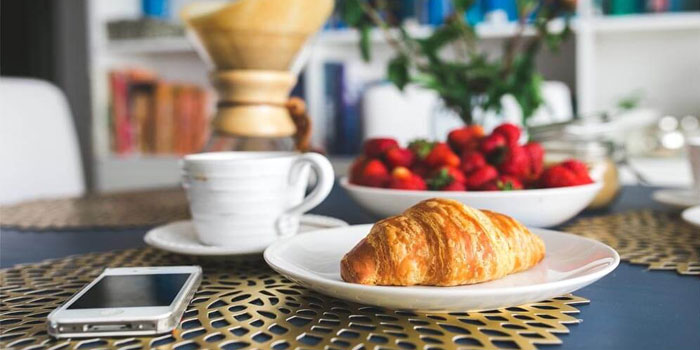

About Us
Bread & Butter

Bread & Butter website is owned by Ivon Vaughn D. Quinto, an Information Technology student and is knowledgeable in baking. Ivon was inspired to create a website that showcases his homemade recipes of breads and pastries of all kinds. This all started when he brought a cake to his friends in which they delightedly ate and curiously wondered where did the cake come from. Ivon then told his friends that he baked it himself. Through encouragement of the people around him because of his love for baking, he decided to share his tips and knowledge about baking to people who want to learn for free. That being said, he envisions that someday, aspiring bakers can create bread and pastry masterpieces.
Bread & Butter was established since 2023 with the goal of making baking life a lot more sweeter for everyone.